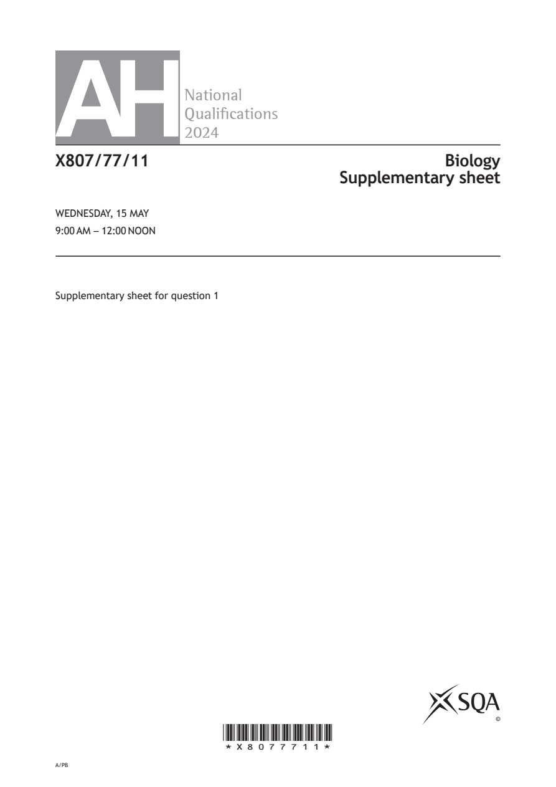
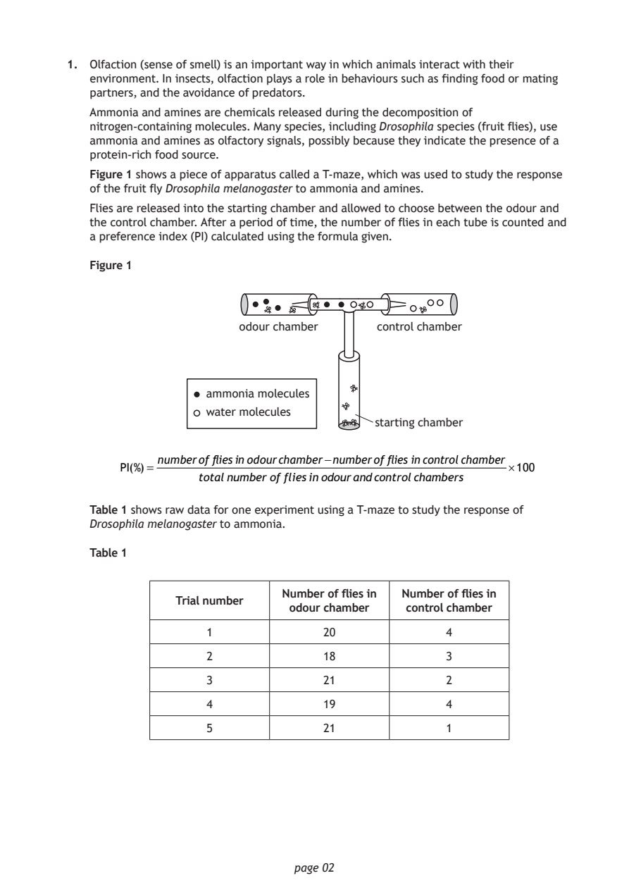
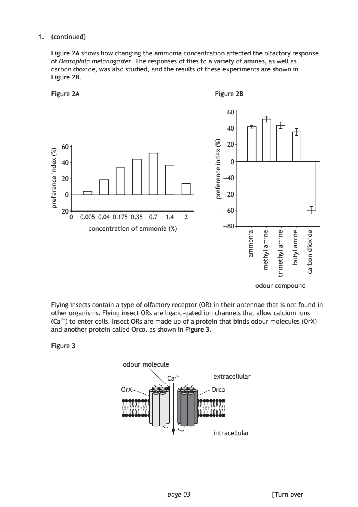
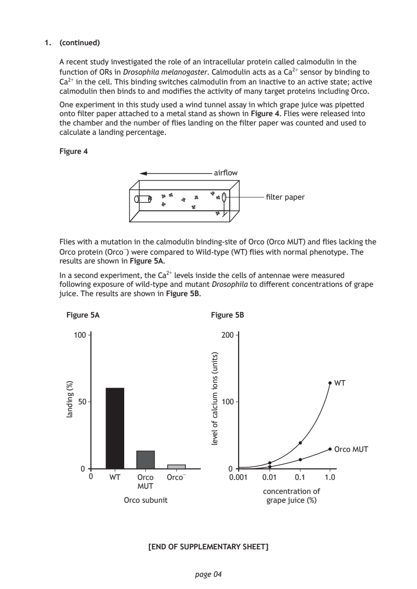

Source: SQA / Qualifications Scotland. This is a StemInteract HTML companion, not an official HTML edition. Use the original images for figures, graphs and table layout.
PDF page 1

Selectable page text
AH
National
Qualications
2024
X807/77/11 Biology
Supplementary sheet
WEDNESDAY, 15 MAY
9:00 AM – 12:00 NOON
Supplementary sheet for question 1
©
*X8077711*
A/PBPDF page 2

Selectable page text
1. Olfaction (sense of smell) is an important way in which animals interact with their
environment. In insects, olfaction plays a role in behaviours such as finding food or mating
partners, and the avoidance of predators.
Ammonia and amines are chemicals released during the decomposition of
nitrogen‑containing molecules. Many species, including Drosophila species (fruit flies), use
ammonia and amines as olfactory signals, possibly because they indicate the presence of a
protein‑rich food source.
Figure 1 shows a piece of apparatus called a T‑maze, which was used to study the response
of the fruit fly Drosophila melanogaster to ammonia and amines.
Flies are released into the starting chamber and allowed to choose between the odour and
the control chamber. After a period of time, the number of flies in each tube is counted and
a preference index (PI) calculated using the formula given.
Figure 1
odour chamber control chamber
ammonia molecules
water molecules
starting chamber
numberof fliesinodourchamber−numberof fliesincontrolchamber
PI(%)= × 100
totalnumberoffliesinodourandcontrolchambers
Table 1 shows raw data for one experiment using a T‑maze to study the response of
Drosophila melanogaster to ammonia.
Table 1
Number of flies in Number of flies in
Trial number
odour chamber control chamber
1 20 4
2 18 3
3 21 2
4 19 4
5 21 1
page 02PDF page 3

Selectable page text
1. (continued)
Figure 2A shows how changing the ammonia concentration affected the olfactory response
of Drosophila melanogaster. The responses of flies to a variety of amines, as well as
carbon dioxide, was also studied, and the results of these experiments are shown in
Figure 2B.
Figure 2A Figure 2B
60
40
20
0
−40
−20
−60
−80
page 03
)%(
xedni
ecnereferp
)%(
xedni
ecnereferp
ainomma enima
lyhtem
enima
lyhtemirt
enima
lytub
edixoid
nobrac
60
40
20
0
−20
0 0.005 0.04 0.175 0.35 0.7 1.4 2
concentration of ammonia (%)
odour compound
Flying insects contain a type of olfactory receptor (OR) in their antennae that is not found in
other organisms. Flying insect ORs are ligand‑gated ion channels that allow calcium ions
(Ca²⁺) to enter cells. Insect ORs are made up of a protein that binds odour molecules (OrX)
and another protein called Orco, as shown in Figure 3.
Figure 3
odour molecule
extracellular
Ca²⁺
OrX Orco
intracellular
[Turn overPDF page 4

Selectable page text
1. (continued)
A recent study investigated the role of an intracellular protein called calmodulin in the
function of ORs in Drosophila melanogaster. Calmodulin acts as a Ca²⁺ sensor by binding to
Ca²⁺ in the cell. This binding switches calmodulin from an inactive to an active state; active
calmodulin then binds to and modifies the activity of many target proteins including Orco.
One experiment in this study used a wind tunnel assay in which grape juice was pipetted
onto filter paper attached to a metal stand as shown in Figure 4. Flies were released into
the chamber and the number of flies landing on the filter paper was counted and used to
calculate a landing percentage.
Figure 4
airflow
filter paper
Flies with a mutation in the calmodulin binding‑site of Orco (Orco MUT) and flies lacking the
Orco protein (Orco⁻) were compared to Wild‑type (WT) flies with normal phenotype. The
results are shown in Figure 5A.
In a second experiment, the Ca²⁺ levels inside the cells of antennae were measured
following exposure of wild‑type and mutant Drosophila to different concentrations of grape
juice. The results are shown in Figure 5B.
Figure 5A Figure 5B
Orco subunit
page 04
)%(
gnidnal
100
WT
50
Orco MUT
0
0 WT Orco Orco⁻ 0.01 0.1 1.0
MUT
)stinu(
snoi
muiclac
fo
level
200
100
0
0.001
concentration of
grape juice (%)
[END OF SUPPLEMENTARY SHEET]